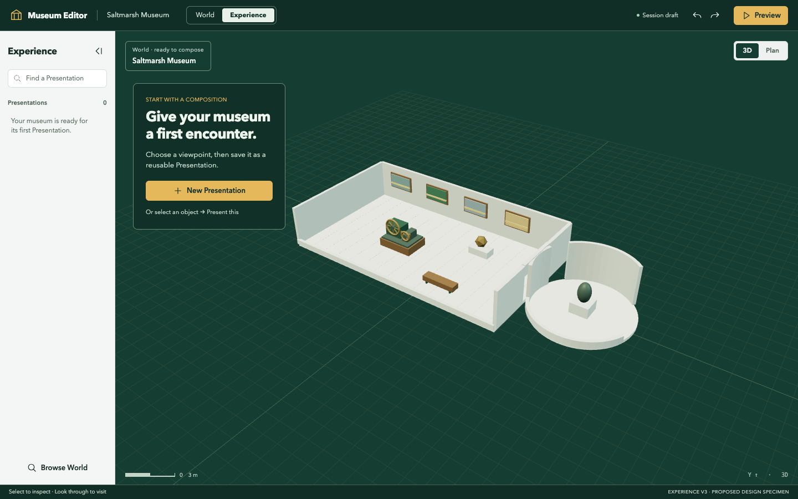

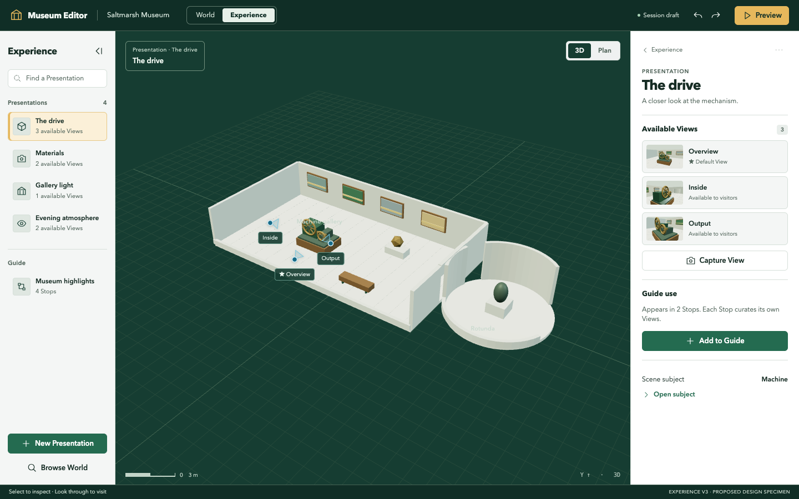

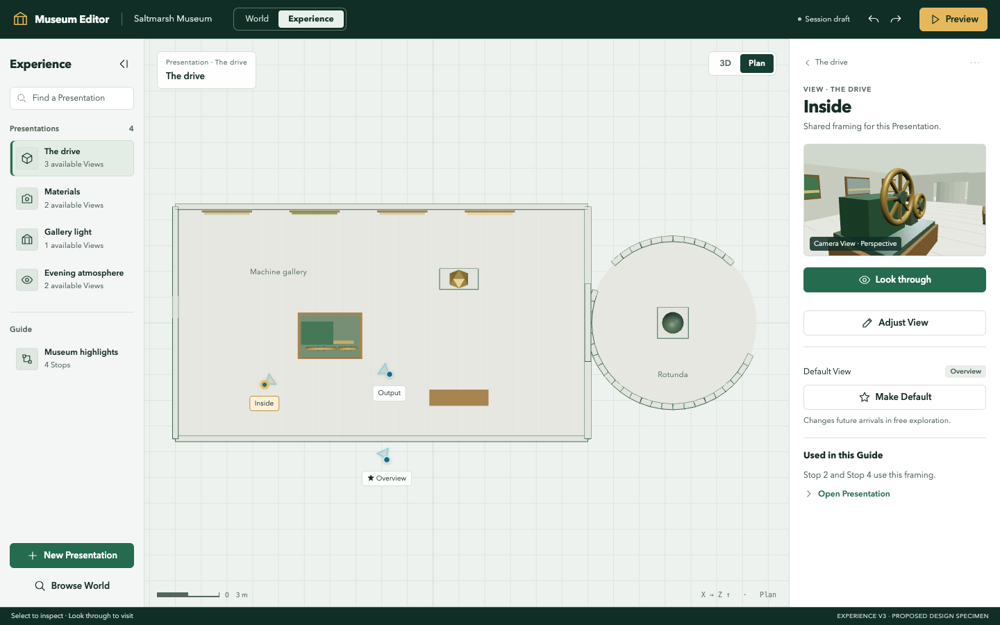

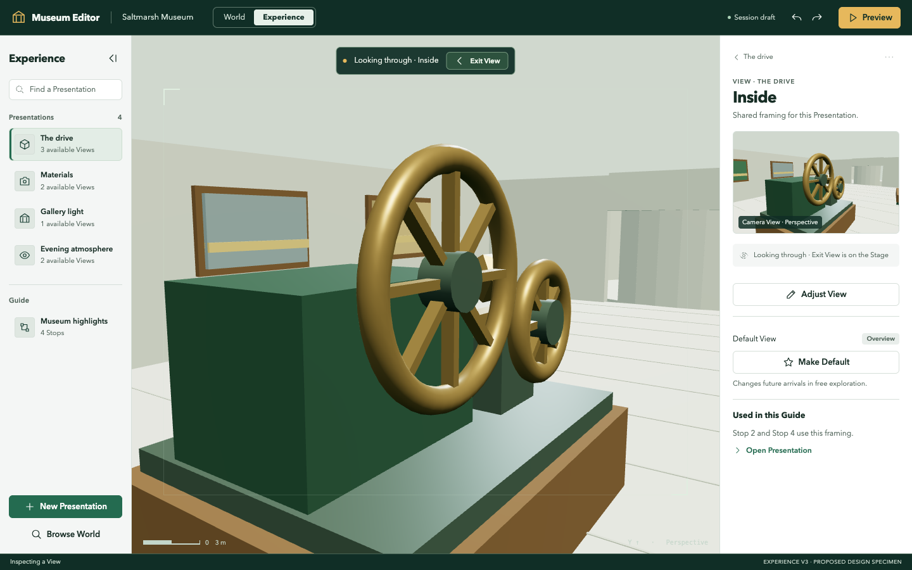

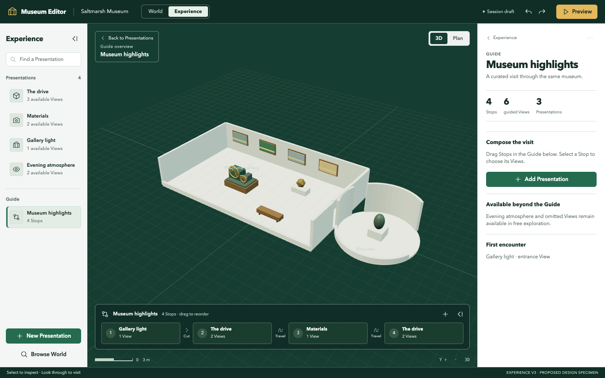

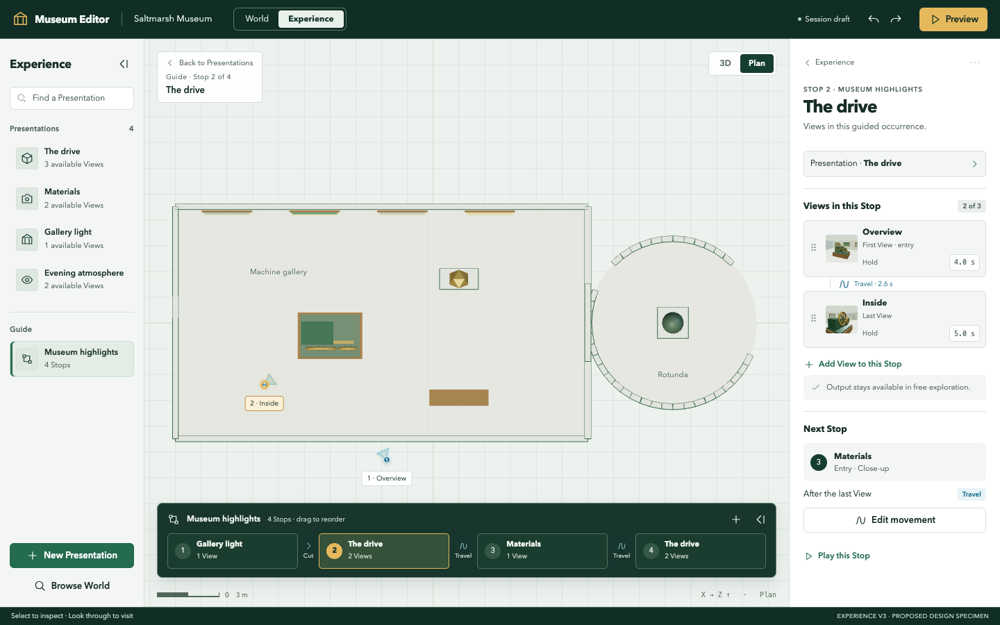

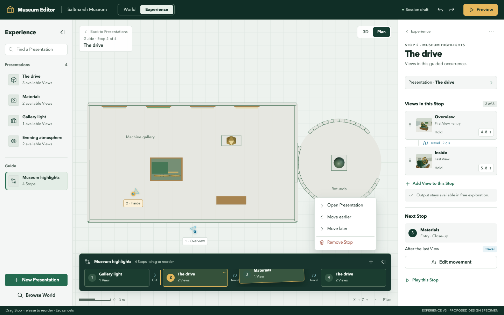

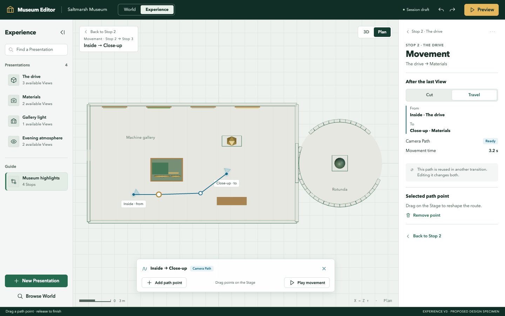

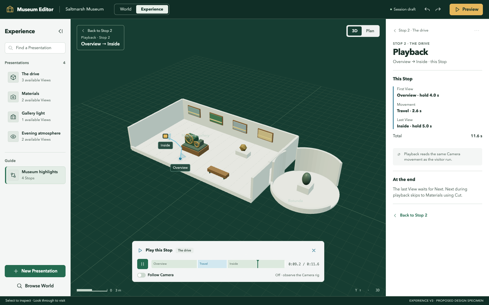

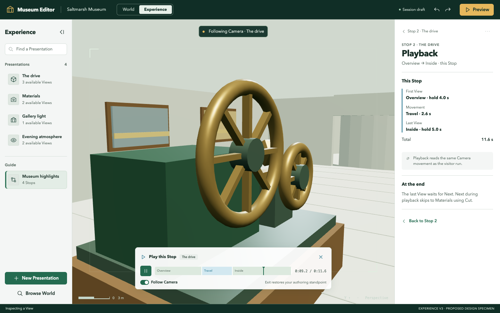

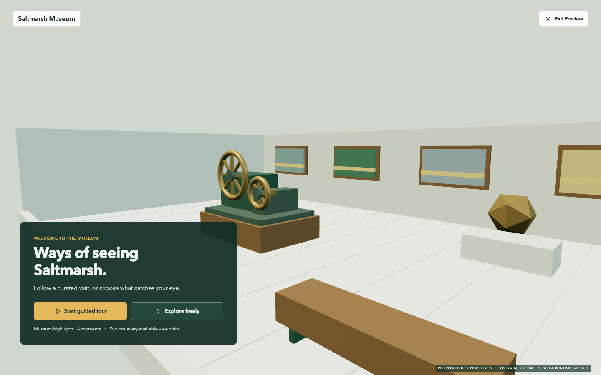

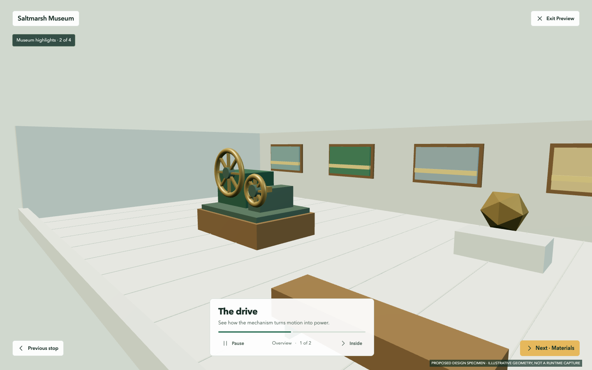

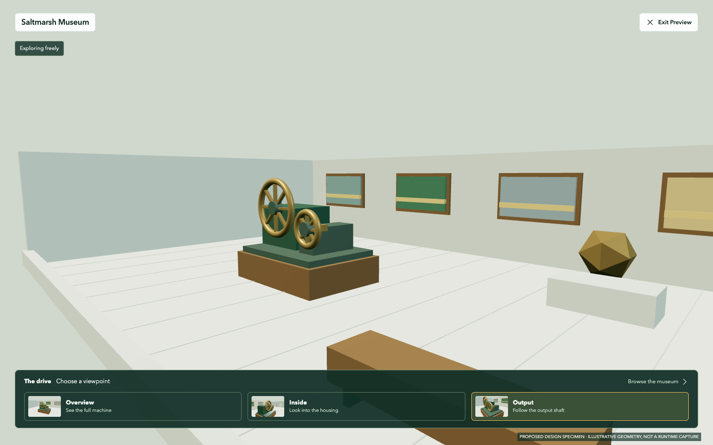

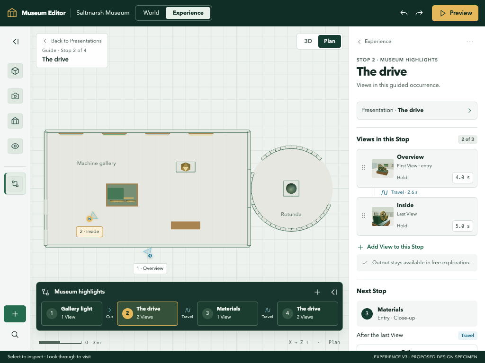

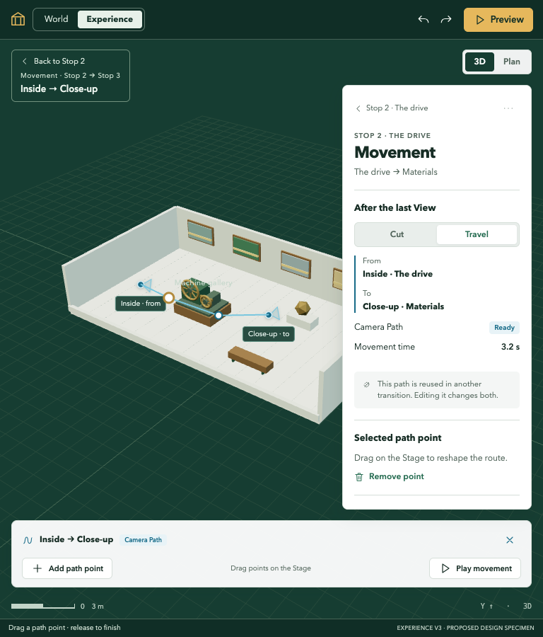
One museum, reusable Presentations, locally curated Stops, and movement you can inspect where it happens. These 15 PNGs are generated design specimens awaiting owner ratification. They are not screenshots of implemented application behavior.














